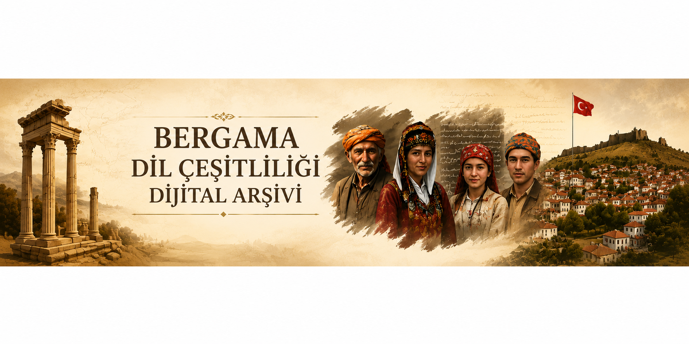

TÜBİTAK 1001 Projesi
Bu dijital arşiv, İzmir Bergama ilçesinde yaşayan Yörük, Türkmen, Çepni ve Manav topluluklarının dilsel ve kültürel mirasını belgelemek amacıyla oluşturulmuştur.
Bu web sitesi, TÜBİTAK 1001 kapsamında yürütülen “İzmir Bergama İlçesi Yörük-Türkmen-Çepni-Manav Dil Çeşitliliğine Toplum Dilbilimsel Bir Bakış” başlıklı proje kapsamında elde edilen verilerin, video kesitlerinin, yayınların ve dijital arşiv materyallerinin paylaşılması için hazırlanmıştır.
Sitede saha çalışmaları, sözlü anlatılar, video kayıtları, ses verileri, transkripsiyonlar, yayınlar ve proje çıktıları aşamalı olarak paylaşılacaktır.